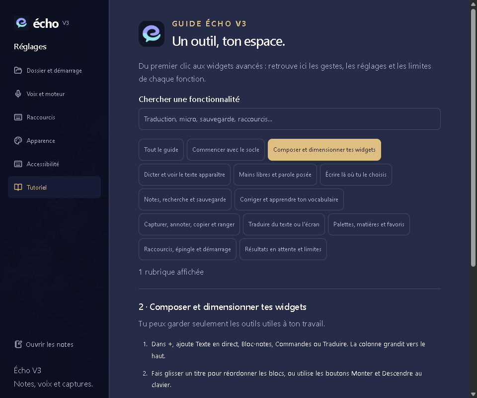

Un petit socle.
Ton espace au-dessus.
Dicter à l’emplacement du curseur
Clique dans le champ où tu veux écrire, puis sur le micro du petit socle. Parle ; un deuxième clic arrête la dictée. Tu n’as pas à sélectionner une destination dans Écho.
Dans Réglages → Raccourcis, choisis une touche comme 1, une lettre ou F8 : un appui démarre et un autre arrête. Une touche seule est réservée à Écho pendant son exécution.
Socle introuvable ? Clique Afficher le petit socle dans les réglages ou dans la grande fenêtre des notes. Replacer en bas à droite est disponible dans les réglages généraux.
Le bloc-notes, quand tu en as besoin
Dans le bloc-notes, clique dans le texte puis démarre le micro. Arrête la dictée, clique Traduire, choisis la langue et lance Traduire la note. Le résultat apparaît sous l’original, qui reste conservé. Français ↔ anglais en priorité ; allemand et néerlandais sont aussi disponibles.
Tout reste sur ce PC, sans API payante. Relis les noms propres, les nombres et les heures : les modèles peuvent les reformuler.
Garde seulement les outils dont tu as besoin. Ajoute un bloc-notes, le texte en direct ou un traducteur, puis compose ta colonne comme tu le souhaites.
Ouvrir Écho V3Installateur Windows
D:\Écho V3\Écho V3.exe
Si ton navigateur propose de télécharger l’EXE, ouvre directement ce fichier depuis l’Explorateur Windows. Conserve le dossier moteur à côté.
01 / COMPOSERDes blocs à ta mesure.
Le bouton + ajoute tes outils. Prépare largeur et hauteur dans Réglages → Disposition, puis clique Appliquer les dimensions. Les curseurs restent en place. Déplace les blocs avec leur poignée ou leurs flèches, réduis-les ou retire-les. L’épingle garde l’ensemble visible.
02 / DICTERTa voix, tes mots.
Clique dans ton champ texte, puis sur le micro : tu peux relâcher la souris. Un second clic arrête la prise. Capture et bloc-notes sont juste à côté. Pour privilégier la qualité, choisis Précise dans Voix et moteur. Les aperçus sont provisoires ; la finale est transmise une seule fois.
03 / DÉCOUVRIRLe guide est dans l’appli.
La roue dentée ouvre les réglages → Tutoriel. Douze rubriques avec recherche, plus les grandes commandes et le préréglage mains libres dans Accessibilité.
Du texte à comprendre ? Ajoute « Traduire ».
Colle un texte ou choisis une zone d’écran. Français, anglais, néerlandais, allemand, espagnol et italien, avec un suivi facultatif qui se met en pause pendant la dictée.
À connaître avant la première priseLe moteur vocal utilise Python et les modèles Whisper déjà présents sur ce PC. L’aperçu n’est pas garanti mot à mot instantané. L’insertion dans une autre application reste à valider sur ce PC. L’OCR peut mal lire des références : relis toujours le texte détecté.
Un tutoriel intégré, accessible à tout moment.

Les notes des anciennes versions restent à leur emplacement. V3 démarre dans son propre espace, avec le micro et le suivi d’écran arrêtés.